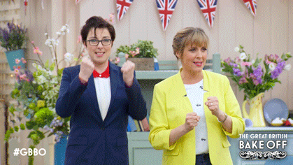

Battle Royal
May 17, 2021
Battle Royal (noun) a fiercely contested fight or dispute
First of all, I love this title. It fits this book perfectly.
I was so incredibly excited to see that I had gotten this ARC. An enemies-to-coworkers AND business rivals-to-lovers, hot grumpy x sunshine rom-com with baking at its center?
Sylvie Fairchild, our sunshine main character, is a baker who catapulted to fame with her fun, creative cakes, and a memorable unicorn cake that goes wrong on Operation Cake, this world's baking reality tv show. After her stint on Operation Cake, she opens her bakery, Sugar Fair, a whimsical bakery that happens to be across the street from De Vere bakery, owned and currently run by Dominic himself. When both the producers on Operation Cake want Sylvie to come back as a judge and the newly engaged Princess is interested in a wedding cake from either De Vere or Sugar Fair, Sylvie and Dominic are thrown in each other's paths again to their (initial) mutual dismay.

I absolutely loved Sugar Fair! The descriptions were absolutely gorgeous, exactly the sort of bakery that would be on top of my list of places to visit.
The characters really shine in this book. It was great to see all the characters involved in both Sugar Fair and De Vere bakery. I loved meeting Dominic's sister Pet, Sylvie's senior assistant Mabel, and everyone in between. Every single character involved with the two bakeries was fleshed out and had their own personality. The contestants, the producers, the makeup artist, and the third judge on Operation Cake all had their own unique relationships with each other and our main characters. The palace characters and their relationships and history were all interesting to flesh through and see how they related to our main characters.
And oh, I loved how this book dealt with both of the main characters' backgrounds, and how those backgrounds interact with each other in both positive and negative ways. The book touches on found family on a variety of levels, and that was cool to see. Sylvie and Dominic's romance was built slowly, with awkward moments, tender soft moments, and serious, thoughtful moments before they finally began a relationship together, and I loved that. I love the grumpy one is soft for the sunshine one trope, so their relationship was one that I had fun reading, especially when their relationship got to the point where Dominic would still look cold, but Sylvie would know him well enough by then to know how he was actually feeling. Their back and forth banter and equally matched baking ability is a match that's well made.
I love how Sylvie's own mishaps as a contestant (especially with Dominic) translates to her being a more compassionate judge, especially as a contrast to Dominic's more cold, biting demeanor. I loved their third judge coworker, who was a nice in-between both in judging and as a mediator between the two, and her pseudo-mentor style relationship with Sylvie.
I liked how chapters began with various little quotes or thoughts from other characters as a way of setting the current mood. The humor was also great, I laughed out loud several times while reading this. I thoroughly enjoyed reading this and recommend it.
I love how Sylvie's own mishaps as a contestant (especially with Dominic) translates to her being a more compassionate judge, especially as a contrast to Dominic's more cold, biting demeanor. I loved their third judge coworker, who was a nice in-between both in judging and as a mediator between the two, and her pseudo-mentor style relationship with Sylvie.
A thank you to Avon and Harper Voyager and Netgalley for the ARC.

More about Battle Royal here:

Title: Battle Royal
Author: Lucy Parker
Four years ago, Sylvie Fairchild charmed the world as a contestant on the hit baking show, Operation Cake. Her ingenious, colorful creations captivated viewers and intrigued all but one of the judges, Dominic De Vere, the hottest pastry chef in London. When her glittery unicorn cake went spectacularly sideways, Dominic was quick to vote her off the show. Since then, Sylvie has managed to use her fame to help fulfill her dream of opening a bakery, Sugar Fair. The toast of Instagram, Sugar Fair has captured the attention of the Operation Cake producers…and a princess.
Dominic is His Majesty the King’s favorite baker, the go-to for sweet-toothed A-List celebrities, and a veritable British institution. He’s brilliant, talented, hard-working. And an icy, starchy grouch. Learning that the irksome Sylvie will be joining him on the Operation Cake judging panel is enough to make the famously dour baker even more grim. Her fantastical baking is only slightly more troublesome than the fact that he can’t stop thinking about her pink-streaked hair and irrepressible dimple.
When Dominic and Sylvie learn they will be fighting for the once in a lifetime opportunity to bake a cake for the upcoming wedding of Princess Rose, the flour begins to fly as they’re both determined to come out on top.
The bride adores Sylvie’s quirky style. The palace wants Dominic’s classic perfection. In this royal battle, can there be room for two?